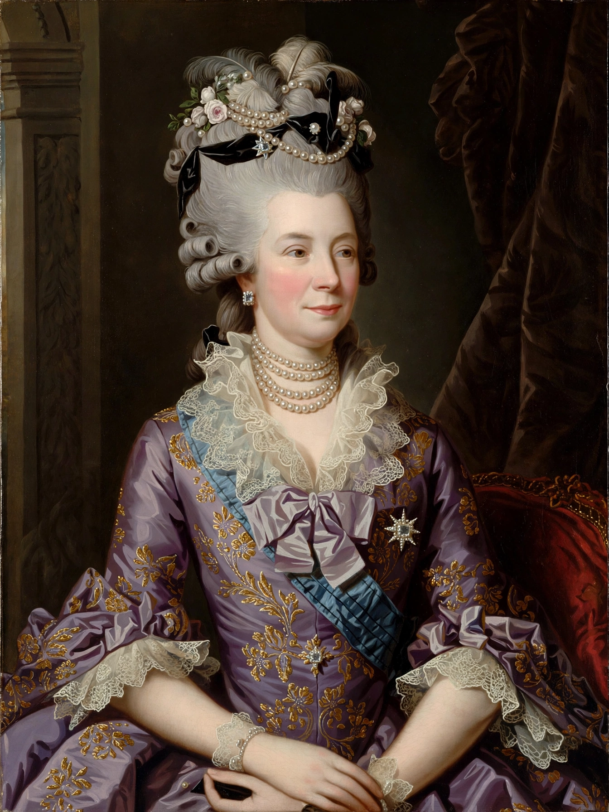

| Born | 19 May 1744, Mirow |
|---|---|
| Died | 17 November 1818, Kew Palace |
| Consort | George III of the United Kingdom (m. 1761) |
| Issue | 15 children, including George IV and William IV |
Charlotte of Mecklenburg-Strelitz (1744-1818) was Queen of Great Britain and Ireland and Electress (later Queen) of Hanover as wife of George III.
Marriage and family
Chosen as a bride sight unseen, she married George III on 8 September 1761 and was crowned weeks later. The couple had fifteen children and a notably domestic court life centred on Windsor, Kew and Buckingham House, which she acquired and which became Buckingham Palace.
Interests
A patron of music (the young Mozart performed for her), botany at Kew, and charities and education, she supported artists and founded orphanages. She endured the strain of the king's recurring mental illness and the regency of her eldest son.
Legacy
Cities such as Charlottesville and Charlotte, North Carolina, bear her name. Claims about possible African ancestry, popularised in recent decades, are debated by historians.